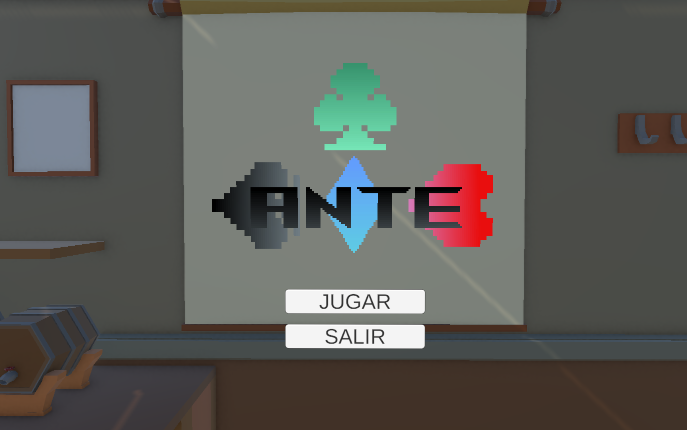
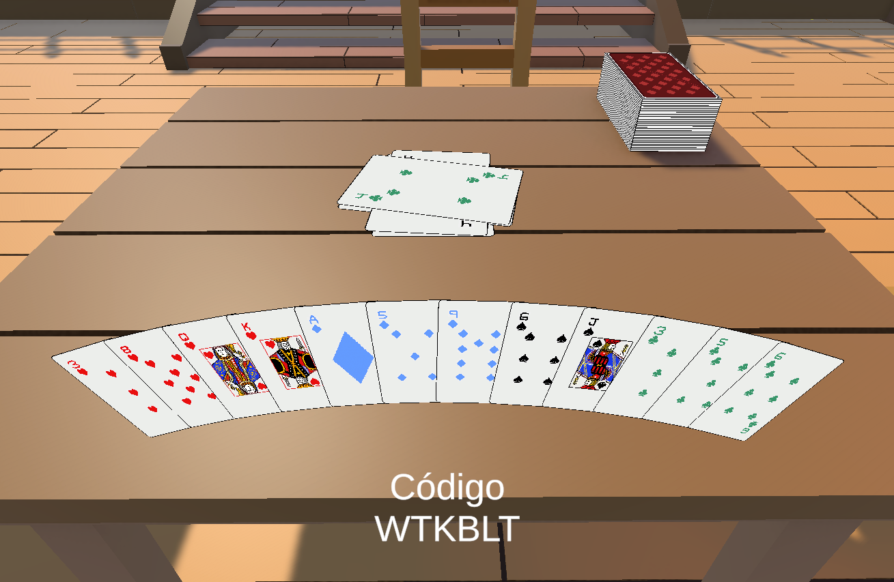

Proyecto destacado
ANTE
Un videojuego online multijugador (2-4 jugadores) inspirado en UNO con mecánicas de Póker.
ANTE es el proyecto final que presenté al acabar DAM (desarrollado entre 2 personas) que mezcla mecánicas básicas del UNO con mecánicas de apuestas y de Póker. Esta simple idea nos hizo llevarnos un sobresaliente de nota y considerar publicar el juego en Steam o en itch.io cuando estuviera completamente terminado.

Encargado del diseño de la interfaz, de las cartas y de todo el apartado visual del juego (quitando los escenarios, sacados de la Asset Store para ahorrar tiempo). Contribuidor en la programación de la lógica de las cartas y de algunas mecánicas de juego aun en desarrollo. NGO utilizado para el desarrollo del apartado online y actualmente aprendiendo el Steamworks SDK para poder publicar el juego en Steam.
